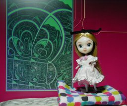
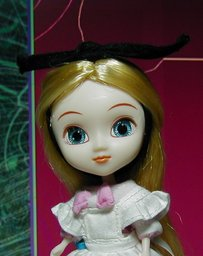

リトルプーリップ ファンタスティックアリス ピンク


不思議の国のアリスをイメージしたリトルプーリップです。先に紹介したプチブライスよりもアリスのイメージを保っているように思います。このアリスにはブルーの色違いがあります。 リトプのクラッシクな２人のアリスに、独創的なマーマレードハート。どこかのアリスロワイヤルを思い出させますが、人に言えない過去を持ってるわけではないハズ。両者が似た時期に発売した事情には目をつぶるとして。 台が付属していないので他のフィギュアの台を流用しました。支える位置が合わなかったので、下にハンカチを敷いてゴマカしました。 背景は Winamp の MilkDrop プラグインを WinShot した 2 つの画像を GIMP でほんの少し変更し組み合わせたものです。 更新：2006-03-23 初公開：2006年03月23日 20:44:35 最新版：2006年03月23日 20:44:35 Links: プーリップ: http://www.junplanning.co.jp/ 先に紹介したプチブライス: http://jrf.cocolog-nifty.com/column/2006/02/post_19.html アリスロワイヤル: http://www.kagihime.jp/ MilkDrop: http://www.milkdrop.co.uk/ WinShot: http://www.woodybells.com/winshot.html GIMP: http://www.gimp.org/